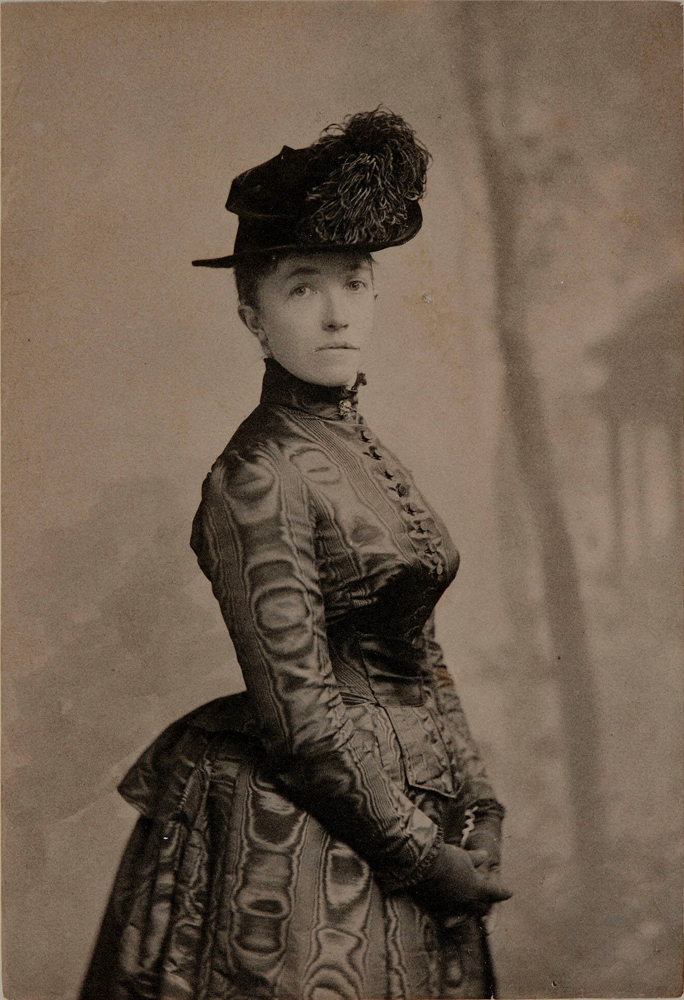
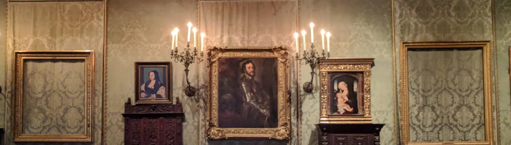

Isabella Stewart Gardner was born into a prosperous family in New York City in 1840. She married John “Jack” Gardner—the scion of a Boston family—in 1860. Newly installed in Boston’s Back Bay, the couple struggled to have children, and, tragically, their only child, Jackie, passed away before his second birthday. After this tragic loss, Isabella and Jack began to journey the world, traveling extensively throughout Europe and Asia and returning to Venice again and again. These travels sparked Isabella’s deep interest in art and culture.
At home in Boston, Isabella began to take classes at Harvard, studying art history and Italian literature. She was first a collector of rare books, but at Harvard, she met Bernard Berenson, a student who would go on to serve as her art advisor. Starting in the 1890s, she and Berenson worked together to assemble one of the most important art collections in the world, acquiring everything from major works of Italian Renaissance art to textiles to Chinese sculpture to French paintings made in the 1800s.
Jack and Isabella dreamed of creating a museum together. When Jack sadly died unexpectedly in 1898, Isabella persisted in making their shared dream a reality. Construction of the Museum began in 1899 and was completed in 1901. Isabella spent the next two years installing her wide-ranging art collection throughout the Museum. It opened to the public in 1903 under the name Fenway Court. The Museum quickly became a vibrant cultural center in the city; Isabella hosted concerts, dinners, and gatherings for artists and other creatives.
Isabella died in 1924. Her will left clear instructions to make no permanent changes to the Museum displays. It also clearly stated that the Museum should remain for the “enjoyment and education of the public forever.”
Learn more about Isabella's dream in "Chasing Beauty: The life of Isabella Gardner" by Natalia Dykstra.
In the early hours of March 18, 1990, two men in police uniforms rang the Museum intercom and stated they were responding to a disturbance. The guard on duty broke protocol and allowed them through the employee entrance. At the thieves’ direction, he stepped away from the security desk. He and a second security guard were led to the basement of the Museum where they were restrained.

Motion detectors recorded the thieves’ movements as they made their way to the galleries. They took several well-known works of art from the Museum’s second floor Dutch Room. They cut Rembrandt’s Christ in the Storm on the Sea of Galilee and A Lady and Gentleman in Black from their frames; removed Vermeer’s Concert and Flinck’s Landscape with an Obelisk from their frames; pulled an ancient Chinese bronze gu, or beaker, from a table; and took a small self-portrait etching by Rembrandt from the side of a chest and removed it from its frame. In the Short Gallery, also on the second floor, they took five Degas works and a bronze eagle finial. They also stole Manet’s Chez Tortoni from the Blue Room on the Museum’s first floor, leaving its frame behind as well. The thieves departed at 2:45 am, making two separate trips to their car with the artworks. The guards remained handcuffed until police arrived at 8:15 am. This incident remains unsolved as an open FBI investigation.
This is an example of long text that would overflow the frame, so that you can see that the scroll bar will allow the reader to read all the text available for the story. Its not part of the original design but put here just because using flex containers means there is rarely a time where the container does not expand to fit the entire text.